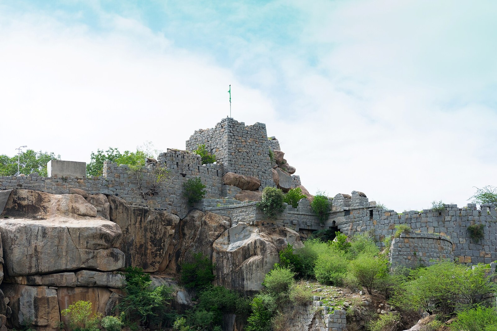

The Raichur doab
The wedge of land between the Krishna and the Tungabhadra, with its forts at Raichur and Mudgal, was the standing frontier of the Deccan for two centuries.

The Raichur doab is the triangle of black-soil country between the Krishna on the north and its tributary the Tungabhadra on the south, narrowing eastward to where the two rivers meet. Two forts command it: Raichur, built according to its inscriptions in 1294 by officers of the Kakatiya court – tradition names queen Rudrama’s minister, though she was likely dead by then, and Mudgal to the west. From the founding of the Bahmani state in 1347 until the fall of Vijayanagara in 1565 the doab changed hands repeatedly and was the object of most of the wars between the northern and southern powers.
Its value was partly agricultural, partly strategic. The rivers were the natural lines of defence for each side, so whoever held the doab held a bridgehead across the other’s river. In the war of the 1360s Vijayanagara briefly seized Mudgal and Bahmani forces recovered it; Harihara II contested the doab in 1398; the sultans held it for most of the fifteenth century; Krishnadevaraya took Raichur from Bijapur in 1520; Bijapur recovered it after 1565 and kept it until the Mughals came. Eaton and Wagoner have shown that the forts were rebuilt by every occupant, so that Raichur’s walls carry Kannada, Telugu, Persian and Arabic inscriptions in layers, and that its gateways and temples were reworked rather than razed. The contest over the doab was conducted by rulers who shared a military culture: both sides used the same kinds of fortification, both recruited cavalry from the same horse trade, and by the 1430s both employed soldiers of the other’s religion.
The doab is therefore less a line between two civilisations than the place where two states met and copied one another. It fixed the shape of Deccan politics for two centuries: a northern power with its capital on the plateau, a southern power with its capital on the Tungabhadra, and a zone between them that neither could hold for long. After 1565 the frontier dissolved, and the doab became an interior district of Bijapur.
In the story
The doab is the collection’s first frontier, and it sets a pattern: a border that is fought over constantly without either side being able to abolish it. That equilibrium, two sovereignties facing each other across a contested zone, is the opposite of paramountcy. Its disappearance after 1565, when the border simply ceased to exist, is one of the moments at which the timeline’s plurality begins to thin, long before the Mughals arrived.
In the map collection
Vandermaelen, Bejapoor – Asie 102 (1827)